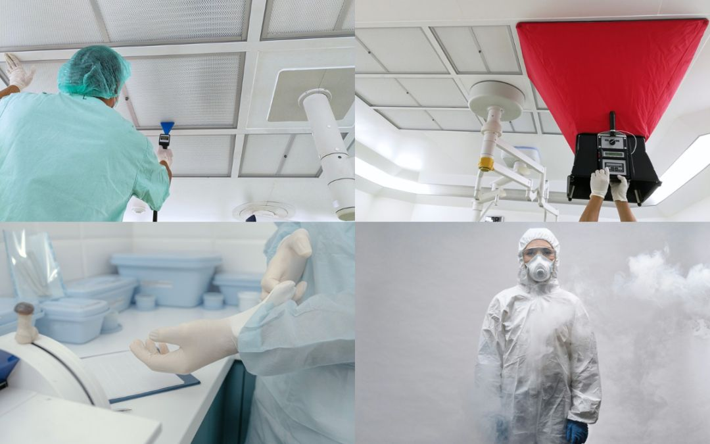

Kwalifikacja i rekwalifikacja pomieszczeń czystych
Pełny cykl życia cleanroomu: od URS i DQ, przez testy OQ i PQ, po rekwalifikację, monitoring i decyzję, której da się bronić przed inspektorem.
- klasy A–D, ISO 5–8 i stany testowania
- testy OQ i PQ krok po kroku
- RQ wg Annex 1 §4.32, ISO 14644-2 i Farmakopea
Kurs 1 · Kwalifikacja i rekwalifikacja pomieszczeń czystych w farmacji
Od wymagań do decyzji kwalifikacyjnej
- Formakurs online · 4 części · ćwiczenia · case studies · quiz końcowy
- Poziompodstawowy → zaawansowany
- PodstawaEU GMP Annex 1 (2022) · EU GMP Annex 15 · ISO 14644-1 · ISO 14644-2 · ISO 14644-3 · Farmakopea Europejska · wytyczne FDA
Cleanroom to nie tylko klasa na drzwiach. To system, który trzeba zaprojektować, zakwalifikować, a potem przez lata udowadniać, że nadal działa. Kurs prowadzi przez cały ten cykl — w kolejności, w jakiej spotykasz go w projekcie.
Przy okazji porządkuje rzeczy, które w dokumentacji wielu zakładów są pomieszane: klasyfikację z monitoringiem, OQ z PQ, wymaganie GMP z praktyką zakładową. I wyjaśnia, skąd naprawdę biorą się liczby, które wszyscy powtarzają — np. limit 20 cząstek ≥5 µm dla klasy A.
To trzy różne procesy z różnymi celami i limitami. Kto je myli, potrafi poprawnie wykonać pomiar i błędnie ocenić wynik.
Program kursu
- Podstawy regulacyjne: Annex 1 (2022), Annex 15, seria ISO 14644, Farmakopea Europejska i wymagania FDA
- Klasy A–D i ISO 5–8, stany as-built / at rest / in operation, limity cząstek i mikrobiologii — i skąd się wzięły
- Cleanroom jako system bezpośredniego wpływu: URS, DQ z analizą ryzyka, IQ
- OQ: warunki wstępne i sekwencja testów — integralność HEPA, nawiew i ACH, kaskada ciśnień, temperatura i wilgotność, cząstki, mikrobiologia, wizualizacja przepływu, czas regeneracji
- PQ in operation: cząstki, mikrobiologia, wizualizacja w działaniu, symulacja procesu i raporty cząstkowe
- Rekwalifikacja: typy RQ, zakres wg Annex 1 §4.32, Periodic Review, postępowanie z niezgodnościami, rola EMS
- Uzupełnienie: plan monitoringu wg ISO 14644-2, poziomy alert i action, mapa rozdziałów Farmakopei
- Ćwiczenia: 6 case studies z praktyki i quiz końcowy (20 pytań)
W kursie znajdziesz
- 4 części kursu
- 6 case studies
- quiz końcowy — 20 pytań
- pigułka wiedzy i literatura
Dla kogo?
Validation / Qualification / C&Q, QA, QC i mikrobiologia, Engineering / HVAC, właściciele obszarów czystych oraz osoby, które przygotowują, wykonują lub zatwierdzają kwalifikację pomieszczeń czystych — od początkujących po doświadczonych.